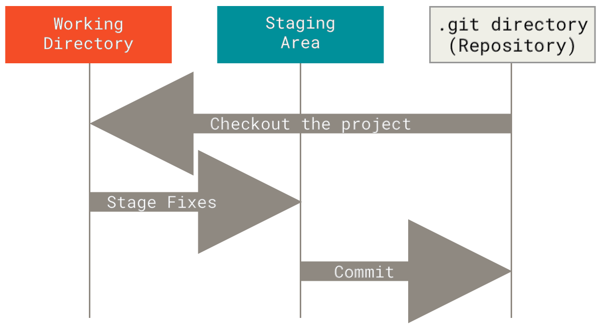

Shared Repositories
Shared repositories allow multiple developers to collaborate on a project by providing a central location for code storage and version control.
A quick guide to introduce readers to Git and GitHub as software version control solutions.
Created by Landon Wardle for TCSS 460
Git is a distributed version control system that tracks changes in files and coordinates work among multiple developers. GitHub is a web-based platform that hosts Git repositories and provides additional collaboration features.
Shared repositories allow multiple developers to collaborate on a project by providing a central location for code storage and version control.
Commit history tracks all changes made to a repository, allowing developers to view and revert to previous versions of the code.
Branching and merging allow developers to work on different versions of a repository simultaneously and integrate their changes later.

Image 1: A Git Graph showing branches and commits.

Image 2: Git Workflow Diagram from Git's Getting Started documentation (see Learning Resource #1)

Image 3: Repository Website of the GitHub extension for Visual Studio. The website shows Commits, Branches, Released, Contributors, the projectl lisence type and the project's file structure.
This video is recommended because it explains several of the concepts presented baove for using Git and GitHub to manage project development.
Open the video in a new tab and confirm that it plays correctly.